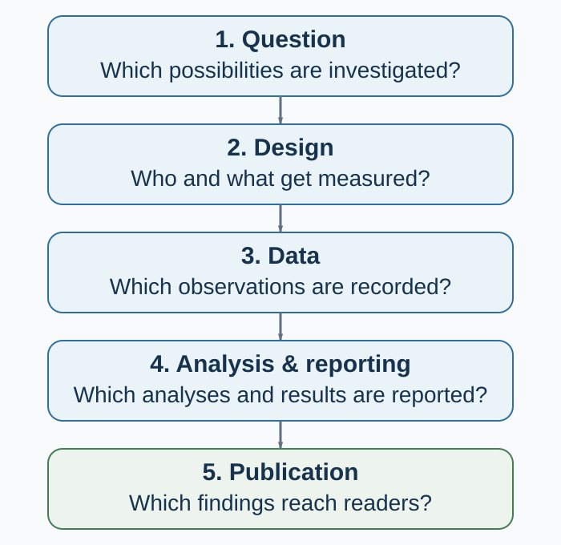

Appendix D — When Evidence Breaks: The Replication Crisis and Research Integrity
Publication bias, underpowered studies, data fabrication, and the systems that can correct them
What this appendix will help you do
After reading this appendix, you should be able to:
- distinguish reproducibility, replicability, robustness, and generalizability;
- explain why low power can exaggerate the effects that become visible;
- identify how analytical flexibility and publication bias select results;
- separate honest error and questionable practice from fabrication and falsification;
- interpret a failed or successful replication without reducing it to a binary verdict;
- design studies and research systems that make error easier to detect and correct.
Begin with the right puzzle
Imagine that one hundred teams test one hundred hypotheses. Their studies differ in measurement, power, implementation, and analysis. Results that look new and statistically significant are more likely to be written, submitted, published, publicized, and cited. Years later, independent teams rerun a subset with larger samples and more constrained plans. Some effects recur, some become smaller, some vary by setting, and some do not recur.
What happened?
The most tempting answers are too simple. “The originals were true and the replications failed” protects the first result by definition. “The originals were false” treats one later estimate as final truth. “Researchers fabricated the data” jumps from disagreement to misconduct without evidence. Each answer closes the case before diagnosing it.
A better question is:
Which combination of true effect, sampling variation, measurement, implementation, analytical choice, selection, and context could have produced the sequence of estimates?
That question turns a scandal story into a problem of inference and institutional design.

Figure Figure D.1 makes the central point visible. The literature is evidence, but it is selected evidence. A safeguard aimed at one stage cannot repair every other stage. Preregistration can reveal when an analysis was planned, but it cannot validate a poor measure. Open data can expose a coding error, but it cannot make an underpowered design precise. Replication can update an effect estimate, but it cannot recover undocumented implementation details.
What the replication crisis does—and does not—mean
Behavioral science uses the phrase replication crisis for accumulating evidence that some influential findings are less stable, smaller, or more context-dependent than the published literature initially suggested. “Crisis” captures the seriousness of the credibility problem. It can also mislead if it implies that all findings failed at once or that one replication determines truth.
Large coordinated projects provide important evidence, not a census of an entire field. The Open Science Collaboration attempted replications of 100 studies published in three psychology journals. Ninety-seven percent of the original studies reported statistically significant results, compared with 36% of the replications; the replication effects were, on average, about half the magnitude of the originals (Open Science Collaboration, 2015). Those numbers revealed substantial attenuation and uncertainty within the sampled literature. They did not establish that “only 36% of psychology is true.”
In experimental economics, Camerer et al. (2016) replicated 18 laboratory studies from the American Economic Review and the Quarterly Journal of Economics using prespecified designs with at least 90% power to detect the original effect size. Eleven of the 18 replications found a significant effect in the original direction, and the average replicated effect was 66% of the original. Again, the proper conclusion is bounded: this selected set contained both recurrence and attenuation.
The wider lesson is cumulative. A single study can be informative, but a clean narrative around one estimate often conveys more certainty than the design earned. Credibility grows when different studies, teams, populations, operations, and analytical decisions converge—and when disagreement is used to refine the claim.
Four questions that are often confused
| Question | What it asks | New data? | Main diagnostic |
|---|---|---|---|
| Reproducibility | Can the reported result be regenerated from the same data, code, and procedures? | No | Does the computational record reproduce the table, figure, and estimate? |
| Replicability | Does a new study addressing the same empirical claim obtain a consistent result? | Yes | How does the new estimate update the cumulative evidence? |
| Robustness | Does the conclusion survive reasonable alternative measurements, models, exclusions, or assumptions? | Not necessarily | Which defensible analytical choices change the conclusion? |
| Generalizability | Does the result travel to other people, tasks, institutions, treatments, outcomes, or times? | Usually | Which boundary conditions explain stability or heterogeneity? |
The terminology follows the National Academies’ useful distinction: reproducibility uses the same data and computational steps, whereas replicability obtains new data to address the same scientific question (National Academies of Sciences, Engineering, and Medicine, 2019). Disciplines sometimes use the words differently, so state the intended operation rather than relying on the label alone.
A perfectly reproduced analysis can still estimate the wrong construct. A robust association can still be confounded. A direct replication can establish stability under a narrow protocol without showing that the effect travels. These are complementary tests, not ranks on one ladder.
Underpowered studies create a selection problem
Statistical power is the probability that a specified analysis will meet a specified decision criterion under a stated effect and data-generating process. Power therefore depends on more than the number of participants. It depends on the effect worth detecting, variance, measurement reliability, allocation, clustering, attrition, compliance, multiplicity, and the estimator.
Low power has an obvious consequence: real effects are often missed. Its less obvious consequence appears when only “successful” results become visible.
Suppose the true effect is small. Small studies will produce a wide distribution of estimates. Most will be inconclusive. A few will be large enough to cross a significance threshold. If journals, authors, or news outlets disproportionately select those few, the visible estimates will be unusually large. This is the winner’s curse: conditional on winning the selection contest, the estimate tends to overstate the underlying signal.
This creates two risks:
- Type S error: the estimated sign can be wrong.
- Type M error: the estimated magnitude can be severely exaggerated.
Gelman and Carlin (2014) emphasize that design analysis should examine these risks, not only conventional power. Button et al. (2013) showed how low power can undermine reliability in neuroscience, a warning that applies more broadly wherever small, noisy studies pass through a significance filter.
Three conclusions follow.
First, a nonsignificant estimate from an imprecise study does not establish that the effect is zero. Second, a significant estimate from an imprecise study does not become precise because it crossed a threshold. Third, planning “80% power” is not a ritual that settles the design. Researchers must justify the smallest effect of substantive interest, model dependence and attrition, and decide what uncertainty would still support a useful conclusion.
Flexible analysis creates many paths to a result
A dataset rarely dictates one analysis. Researchers may choose among outcomes, scale constructions, exclusion rules, covariates, transformations, subgroup definitions, stopping points, and model specifications. Each choice may be defensible alone. The problem arises when the result guides the choice and the final report hides the alternatives.
Simmons, Nelson, and Simonsohn (2011) demonstrated how undisclosed flexibility can raise false-positive rates while leaving a conventional report that looks orderly. This does not mean every unregistered study is invalid or every unexpected analysis is dishonest. It means readers need to know which decisions were made before and after the outcome pattern became visible.
Two processes should be separated:
- Strategic selection or p-hacking: analysis choices are repeatedly searched or selectively reported to obtain a preferred result.
- Unrecorded researcher degrees of freedom: reasonable choices branch as researchers learn from the data, but the final paper presents the surviving path as if it were the only path.
Intent differs, but the inferential problem overlaps: the nominal p-value or interval no longer reflects the full selection process.
The remedy is not to forbid exploration. Exploration is how new ideas are found. The remedy is to preserve the difference between confirmation and discovery. Preregister the primary outcomes, contrasts, exclusions, stopping rules, and analysis where possible. Report deviations. Label unexpected analyses as exploratory. Then test promising discoveries with new data.
Publication bias changes what readers can see
Even perfectly analyzed studies do not enter the literature with equal probability. A result can disappear at several points:
- the analysis is never completed;
- the manuscript is never written;
- the study is written but not submitted;
- a journal rejects it;
- a null outcome is omitted while another outcome is reported;
- a published correction or failed replication receives less attention than the original claim.
This family of selection processes is broader than the classic file-drawer problem. Publication bias can operate through researchers, institutions, journals, reviewers, press offices, and citation behavior.
Franco, Malhotra, and Simonovits (2014) examined 221 studies conducted through one known social-science program, which allowed them to observe completed studies rather than only published papers. Studies with strong results were about 40 percentage points more likely to be published and 60 percentage points more likely to be written up than studies with null results. Much of the loss occurred before journal submission. The study is especially useful because the denominator was known; its exact rates should not be treated as universal across disciplines and periods.
Publication bias changes interpretation. A literature containing ten positive papers is not equivalent to ten positive studies if many unobserved null studies existed. Funnel plots and statistical selection models can diagnose some patterns, but they depend on assumptions and cannot recover studies or outcomes that were never recorded. The stronger response is prospective: register studies, link outcomes to protocols, encourage results-independent review, publish informative nulls, and preserve a discoverable record of completed work.
Honest error, questionable practice, and misconduct are not the same
Scientific records contain mistakes. A cell is mislabeled. A merge duplicates rows. A reverse-coded item is not reversed. A researcher misunderstands a package default. Honest errors can be consequential, and scientists remain responsible for checking and correcting them. But an error is not automatically misconduct.
The United States Office of Research Integrity defines research misconduct as fabrication, falsification, or plagiarism in proposing, performing, reviewing, or reporting research, and explicitly excludes honest error and differences of opinion from the definition (Office of Research Integrity, n.d.). Its terms are useful beyond one jurisdiction:
- Fabrication means making up data or results and recording or reporting them.
- Falsification means manipulating research materials, equipment, or processes, or changing or omitting data or results, so that the research record is not accurately represented.
- Plagiarism means appropriating another person’s ideas, processes, results, or words without appropriate credit.
Formal findings also require standards of evidence and mental state defined by the applicable institution and law. Suspicion, an unusual distribution, or a failed replication is not by itself proof.
Between honest error and formally established misconduct sits a wide range of questionable research practices: undisclosed outcome switching, opportunistic exclusions, misleading rounding, inadequate recordkeeping, selective citation, ghost variables, or presenting exploratory results as confirmatory. Some acts may be reckless or prohibited; others reflect weak training or ambiguous norms. The label does not remove the need to identify the exact action, evidence, intent standard, and policy.
Survey evidence suggests that fabrication and falsification occur, but prevalence estimates are difficult because the behavior is sensitive and definitions vary. Fanelli’s (2009) meta-analysis of survey studies found that 1.97% of scientists admitted at least one instance of fabricating, falsifying, or modifying data or results, while substantially larger shares admitted other questionable practices. The surveys were heterogeneous, often old, and vulnerable to both underreporting and interpretive differences. The result supports vigilance; it is not a current universal rate for behavioral science.
Why incentives matter without removing responsibility
It is comfortable to imagine a system of sound science interrupted only by a few “bad apples.” It is equally misleading to claim that incentives force everyone to misbehave. People retain responsibility for their choices, and systems shape which choices are rewarded, observed, and corrected.
Novel, clean, and positive results are easier to tell as stories. Hiring, promotion, funding, journal space, and media attention can reward speed and surprise more visibly than careful null results, replications, data curation, or corrections. When many career decisions depend on a small number of papers, researchers and institutions may optimize for publication rather than cumulative information.
The design task is therefore two-level:
- Researcher level: make choices traceable, distinguish planned from discovered analysis, preserve data provenance, and correct errors.
- Institutional level: reward credible process, replication, data stewardship, team contributions, and correction—not merely the count and novelty of positive findings.
Reform works when it changes both information and incentives.
Safeguards: what each reform can and cannot do
| Safeguard | What it strengthens | What it does not guarantee |
|---|---|---|
| Design analysis and adequate precision | Reduces exaggerated selected estimates; makes informative nulls more likely | Valid measurement, unbiased implementation, or generalizability |
| Preregistration | Time-stamps planned hypotheses, outcomes, and analyses; reveals deviations | Important theory, good measurement, compliance, or honest execution |
| Registered Reports | Reviews question and method before results; offers in-principle acceptance independent of outcome | Perfect implementation or a correct interpretation |
| Open materials and code | Enables inspection, reuse, and computational reproduction | Ethical release of confidential data or validity of the design |
| Governed data access | Balances verification with consent, privacy, and legal constraints | Frictionless access or freedom from re-identification risk |
| Multi-analyst or multiverse analysis | Shows sensitivity to defensible analytical choices | That every included model is equally credible |
| Direct and multi-site replication | Estimates stability and heterogeneity under declared protocols | Universal truth or transport to every context |
| Corrections and retractions | Updates the visible record when evidence changes | Erasure of earlier citations, publicity, or downstream use |
Registered Reports move part of peer review before outcomes are known: journals evaluate the question and proposed method and can offer in-principle acceptance based on that plan rather than the direction of the findings (Chambers, 2013). The format weakens publication bias at the journal stage, though it cannot prevent poor execution or every form of selection.
The Transparency and Openness Promotion guidelines encourage journals to state standards for citation, data, materials, code, design transparency, preregistration, and replication (Nosek et al., 2015). The wider open-science program emphasizes that no single reform is a truth badge. Credibility depends on interacting practices, incentives, and checks (Munafò et al., 2017; Nosek et al., 2018).
How to interpret a replication
When an original and a replication disagree, proceed in this order.
- Reproduce each result. Do the reported data and code generate the claims?
- Compare the estimands. Did both studies estimate the same effect for the same treatment, outcome, population, and horizon?
- Inspect protocol fidelity. Which materials, incentives, timing, exclusions, and implementation details changed?
- Compare estimates and intervals. Ignore the temptation to reduce the pair to significant versus nonsignificant.
- Examine precision and selection. Was the original small and selected? Was the replication powered for a plausible effect rather than the original point estimate alone?
- Test moderators cautiously. A post hoc explanation is a new hypothesis until tested with new variation.
- Update cumulatively. Combine the new evidence with prior studies under a transparent synthesis model; report heterogeneity and uncertainty.
- Narrow the claim. If the effect depends on a population, material, institution, or period, make that condition part of the theory.
A failed replication can reveal that the effect was absent, smaller than thought, badly measured, analytically fragile, or conditional on an unrecognized feature. A successful replication can increase confidence under that protocol while leaving external validity open. Both outcomes are information.
How to read a behavioral-science claim
Before repeating a memorable finding, ask:
- What is the exact claim: descriptive, predictive, causal, or mechanistic?
- What population, task, setting, treatment, outcome, and period does it cover?
- Was the construct measured validly and reliably for this use?
- Was the comparison randomized or otherwise identified?
- What effect size and uncertainty were reported—not only the p-value?
- Was the study precise enough to distinguish substantively important effects?
- Were outcomes, exclusions, stopping, covariates, and analysis specified in advance?
- Were all planned outcomes and deviations disclosed?
- Could publication or reporting selection explain why this result became visible?
- Can the tables and figures be reproduced from the declared data and code?
- Have independent replications or systematic reviews updated the claim?
- What result would make the authors revise the conclusion?
This checklist does not turn every reader into a forensic investigator. It restores the questions that a polished result can hide.
What to do when you find a serious problem
The first obligation is to the accuracy of the record, not to winning an argument.
- Preserve the original files, metadata, logs, outputs, and correspondence. Do not alter source data.
- Reproduce the discrepancy with a written, versioned procedure.
- Check benign explanations: versions, filters, merges, coding, duplicated exports, unit conventions, and undocumented but legitimate decisions.
- Describe the observable problem precisely. Separate what is known from what is inferred.
- Use the relevant journal correction process or institutional research-integrity officer when misconduct may be involved. Requirements differ by jurisdiction and institution.
- Protect confidential data and good-faith reporters. Do not circulate identifiable allegations beyond those who need to assess them.
- Correct the public claim proportionately: erratum, corrected analysis, expression of concern, retraction, or a documented explanation that resolves the discrepancy.
Correction is not evidence that science has failed. A system that can reveal, investigate, and correct error is stronger than one that preserves a false appearance of certainty.
Key ideas
- The replication crisis is a credibility and selection problem, not one universal replication rate.
- Reproducibility, replicability, robustness, and generalizability ask different questions.
- Low power plus selective visibility can produce inflated published effects.
- Analytical exploration is valuable; hiding exploration as confirmation makes uncertainty unknowable.
- Publication bias begins before journal review and can select studies, outcomes, analyses, and attention.
- Honest error, questionable research practice, fabrication, and falsification require different evidence and responses.
- A failed replication is not proof of fraud, and a successful replication is not proof of universality.
- Preregistration, Registered Reports, open workflows, adequate precision, replication, and correction strengthen different links.
- Scientific integrity is both personal responsibility and institutional design.
- Trust should rest on inspectable procedures and correction, not on the performance of certainty.
Study and practice
- Why can low power increase exaggeration among the results that are published?
- Give one example each of reproducibility, replicability, robustness, and generalizability.
- How can publication bias operate before a manuscript reaches a journal?
- Why does “significant originally, nonsignificant in replication” not settle whether the estimates conflict?
- Distinguish honest error, questionable practice, falsification, and fabrication.
- Which reform addresses outcome-dependent publication most directly? What remains unsolved?
- When should an anomaly be escalated to a research-integrity process?
- Choose one famous behavioral finding and write the narrowest defensible version of its claim.
References cited in this appendix
Button, K. S., Ioannidis, J. P. A., Mokrysz, C., Nosek, B. A., Flint, J., Robinson, E. S. J., & Munafò, M. R. (2013). Power failure: Why small sample size undermines the reliability of neuroscience. Nature Reviews Neuroscience, 14, 365–376.
Camerer, C. F., Dreber, A., Forsell, E., Ho, T.-H., Huber, J., Johannesson, M., Kirchler, M., Almenberg, J., Altmejd, A., Chan, T., Heikensten, E., Holzmeister, F., Imai, T., Isaksson, S., Nave, G., Pfeiffer, T., Razen, M., & Wu, H. (2016). Evaluating replicability of laboratory experiments in economics. Science, 351(6280), 1433–1436.
Chambers, C. D. (2013). Registered Reports: A new publishing initiative at Cortex. Cortex, 49(3), 609–610.
Fanelli, D. (2009). How many scientists fabricate and falsify research? A systematic review and meta-analysis of survey data. PLOS ONE, 4(5), e5738.
Franco, A., Malhotra, N., & Simonovits, G. (2014). Publication bias in the social sciences: Unlocking the file drawer. Science, 345(6203), 1502–1505.
Gelman, A., & Carlin, J. (2014). Beyond power calculations: Assessing Type S (sign) and Type M (magnitude) errors. Perspectives on Psychological Science, 9(6), 641–651.
Munafò, M. R., Nosek, B. A., Bishop, D. V. M., Button, K. S., Chambers, C. D., Percie du Sert, N., Simonsohn, U., Wagenmakers, E.-J., Ware, J. J., & Ioannidis, J. P. A. (2017). A manifesto for reproducible science. Nature Human Behaviour, 1, 0021.
National Academies of Sciences, Engineering, and Medicine. (2019). Reproducibility and replicability in science. National Academies Press.
Nosek, B. A., Alter, G., Banks, G. C., Borsboom, D., Bowman, S. D., Breckler, S. J., Buck, S., Chambers, C. D., Chin, G., Christensen, G., Contestabile, M., Dafoe, A., Eich, E., Freese, J., Glennerster, R., Goroff, D., Green, D. P., Hesse, B., Humphreys, M., … Yarkoni, T. (2015). Promoting an open research culture. Science, 348(6242), 1422–1425.
Nosek, B. A., Ebersole, C. R., DeHaven, A. C., & Mellor, D. T. (2018). The preregistration revolution. Proceedings of the National Academy of Sciences, 115(11), 2600–2606.
Office of Research Integrity. (n.d.). Definition of research misconduct. U.S. Department of Health and Human Services. https://ori.hhs.gov/definition-research-misconduct
Open Science Collaboration. (2015). Estimating the reproducibility of psychological science. Science, 349(6251), aac4716.
Simmons, J. P., Nelson, L. D., & Simonsohn, U. (2011). False-positive psychology: Undisclosed flexibility in data collection and analysis allows presenting anything as significant. Psychological Science, 22(11), 1359–1366.